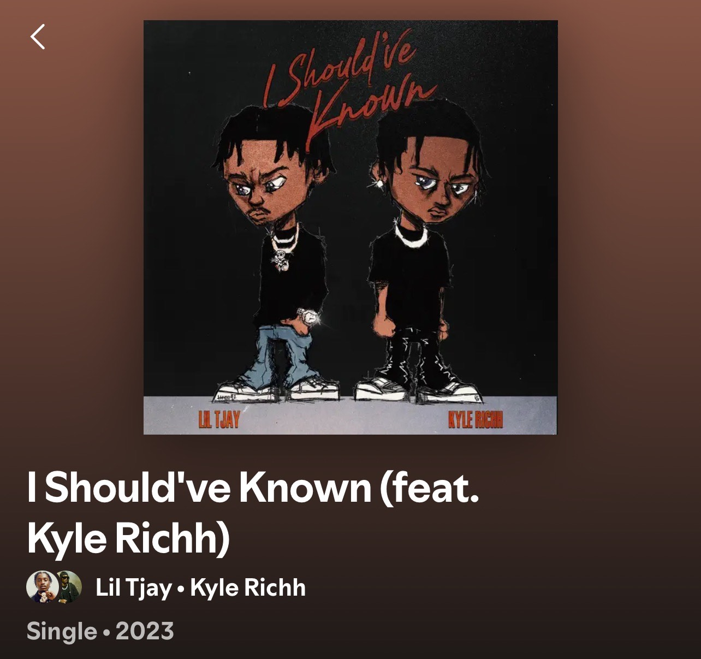
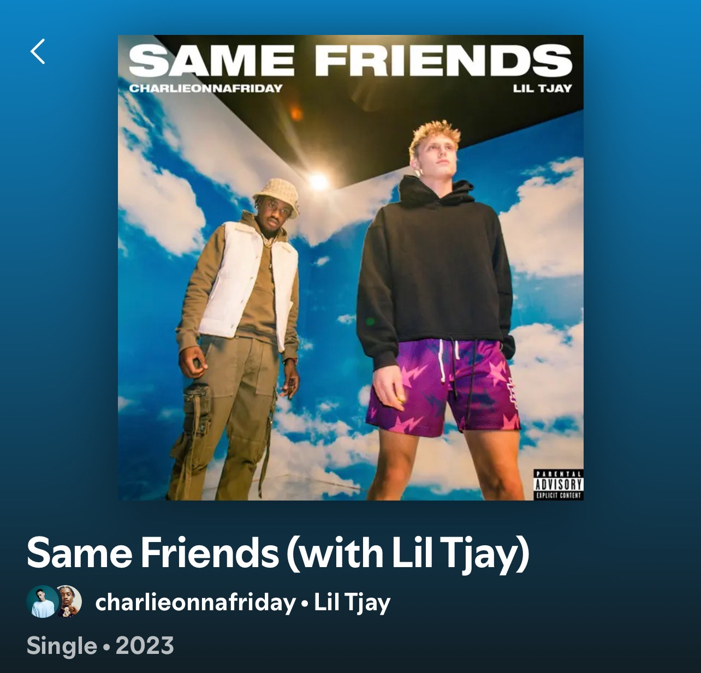
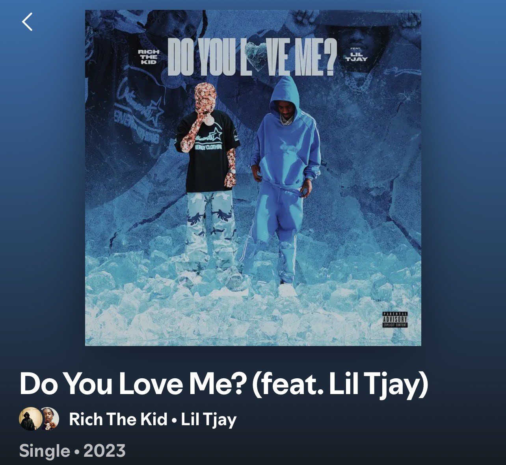
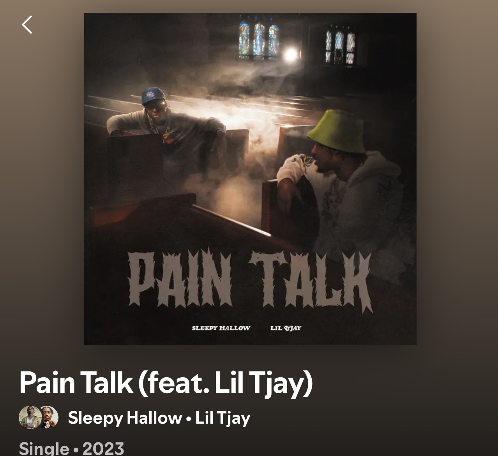
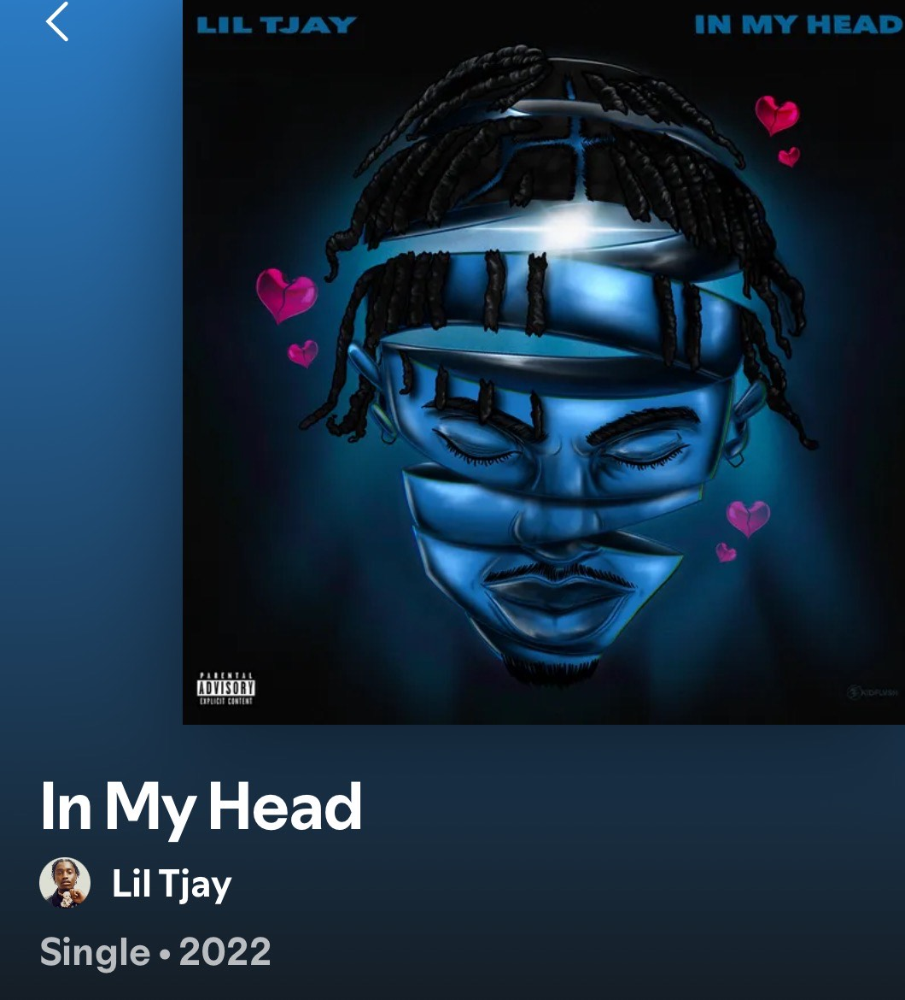
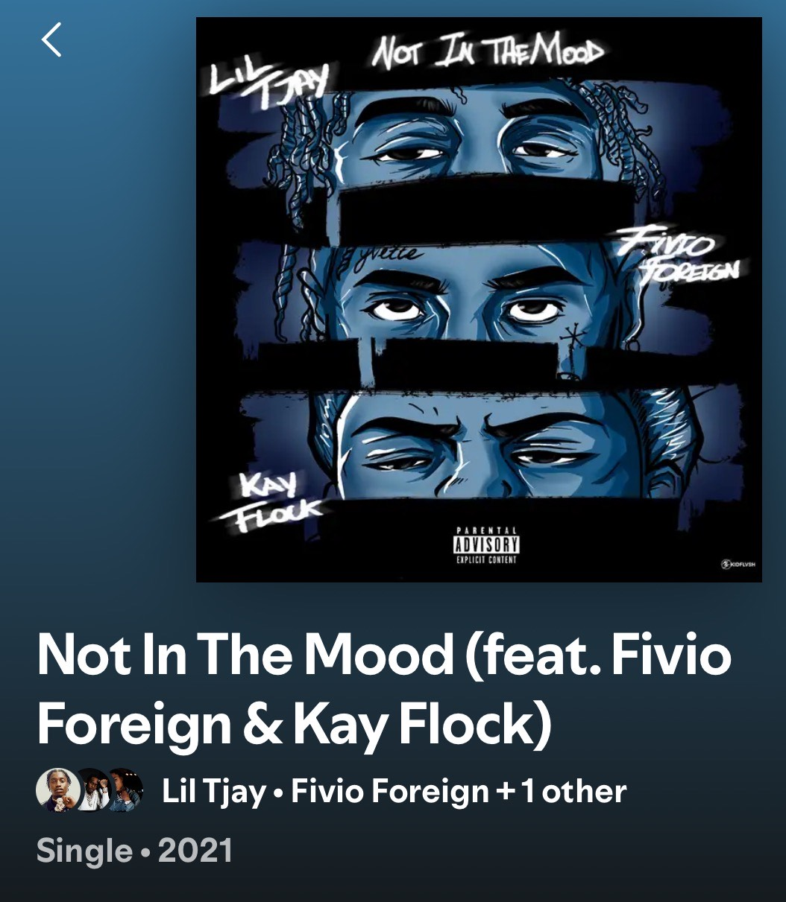

<!DOCTYPE html>
<html lang="en"></html>
<head>
    <meta charset="UTF-8">
    <meta name="viewport" content="width=device-width, initial-scale=1.0">
    <title>Lil Tjay</title>
    <link rel="stylesheet" href="style.css">
      <style>
        body {
            font-family: verdana, Helvetica;
            margin: 20px;
            padding: 20px;
            background: #f6ff00;
        }
        header {
            background: #03d5fa;
            color: #fff;
            padding: 1rem 2rem;
            text-align: center;
        }
        nav {
            background: #cc00ff;
            padding: 0.5rem 2rem;
            text-align: center;
        }
        nav a {
            color: #fff;
            margin: 0 1rem;
            text-decoration: none;
            font-weight: bold;
        }
        main {
            padding: 2rem;
            max-width: 900px;
            margin: 2rem auto;
            background: #fff;
            border-radius: 8px;
            box-shadow: 0 2px 8px rgba(0,0,0,0.05);
        }
        footer {
            background: #333;
            color: #fff;
            text-align: center;
            padding: 1rem 2rem;
            position: fixed;
            width: 10%;
            bottom: 1px;
        }
    </style>
    </head>
</body>
<body>
    <header>
        <h1>Lil Tjay</h1>
        <p>American rapper, singer, and songwriter</p>
    </header>
   <a href="#LilTjay.html"></a>
    </nav>
    <section id="liltjay"</section>
      
      <h1>My Favorite tracks from Lil Tjay</h1>
      
      
      
      
      
      
  <p>This section talks about Lil Tjay</p>
  <h1 style ="border: 2px solid violet;">Lil Tjay</h1>
  <title>Page 1</title>
  <meta name="viewport" content="width=device-width,initial-scale=1" >
  <link href="style.css" rel="stylesheet">
</head>
<body>
  <p style="background-color: Violet;">Lil Tjay(Real Name: Tione Jayden Merritt was born on 30 April 2001 in New York). His first track was F.N and his big track(Got 11th spot on the billboard top 100) was "Pop Out" with Polo G when he was 19 or 20. </p>
  <h1 style="color: Black;">Tjay's first album </h1>
  <p style="background-color: Tomato;">Tjay released his first album True 2 Myself in 2019 which has tracks like F.N and had features from Lil Wayne (for the remix of Leaked), Lil Durk(for the remix of Brothers) and Lil Baby(for the song Decline). References: Google and Spotify </p>
  <h1 style="color:Tomato;">Tjay's second album State of Emergency</h1>
<p style="background-color: MediumSeaGreen;">The album "State of Emergency" didnt do as well as True 2 Myself but had collabs from Flvio Foreign on my favorite song Zoo York with Pop Smoke(R.I.P) and includes collaborations from
  
  
  Sheff G, Sleepy Hallow, Jay Gwuapo and J.I the prince of NY and Jay Critch. This album has 7 songs and the total time of the songs combined is 22 mins. References: Spotify </p>
<p style="background-color: Violet;"> Tjay released 5 albums(Destined 2 win, released in 2021, 222 which was released in 2023 and Farewell(his last album with Columbia Records US who have not elevated his career where he wants it to be). The stats, collabs, successes of each of these 5 albums are in the table below).</p>

<table> 
  <tr>
    <th>Albums</th>
    <th>Collabs</th>
    <th>Successes</th>
    <th>Release Year</th>
     </tr>
  <tr>
    <td>True 2 Myself</td>
    <td>Lil Wayne, Lil Durk, Lil Baby</td>
    <td>sold 45,000 equivalent units and debuted at number 5 on the billboard</td>
    <td>2019</td>
    </tr>
  <tr>
    <td>State of Emergency</td>
    <td>Flvio Foreign,Pop Smoke(R.I.P), Sheff G, Sleepy Hallow, Jay Gwuapo and J.I the prince of NY and Jay Critch</td>
      <td>17,000 copies sold first week</td>
      <td>2020</td>
      </tr>
      <tr>
      <td>Destined 2 win</td>
      <td>Offset, Polo G, Flvio Foreign,6LACK, Moneybagg Yo, Toosii, Sawettie, Tyga etc</td>
      <td>sold 62,000 copies first week</td>
      <td>2021</td>
      </tr>
      <tr>
      <td>222</td>
      <td>Summer Walker, The Kid LAROI, NBA Youngboy, Flvio Foreign, Jadakiss, Coco Jones, Polo G</td>
      <td> sold 22k copies first week</td>
      <td>2023(after June 22nd Shooting that left Tjay in a coma for 5 days after he was shot 7 times)</td>
      </tr>
      <tr>
        <td>Farewell(his last album with Columbia Records US)</td>
        <td>Rich The kid, Polo G, NLE Choppa, G Herbo</td>
        <td>It was rated 7/10 by critics</td>
        <td>2024</td>
        </tr>
        </table>
    <p style="background-color: MediumSeaGreen;">My favorite tracks of Lil Tjay(well i have 5). The first one was Polo G - Suicide feat. Lil Tjay because Tjay's melodic flow plus Polo's melodic flow</p>

<iframe width="560" height="315" src="https://www.youtube.com/embed/bZc92Uh0c3E?si=Yt_b_vNs6c9iqrCC" title="YouTube video player" frameborder="0" allow="accelerometer; autoplay; clipboard-write; encrypted-media; gyroscope; picture-in-picture; web-share" referrerpolicy="strict-origin-when-cross-origin" allowfullscreen>
</iframe>
<style>
.video-container {
  position: relative;
  padding-bottom: 56.25%; /* 16:9 aspect ratio */
  height: 0;
  overflow: hidden;
  max-width: 100%;
}

.video-container iframe {
  position: absolute;
  top: 0;
  left: 0;
  width: 100%;
  height: 100%;
}
</style>

 <a href="website2.html">Home</a>
        <p>Home</p>
        </body>
        <iframe style="border-radius:12px" src="https://open.spotify.com/embed/track/5ybZcAwqUF7i9gwABLeXzs?utm_source=generator" width="100%" height="152" frameBorder="0" allowfullscreen="" allow="autoplay; clipboard-write; encrypted-media; fullscreen; picture-in-picture" loading="lazy"></iframe>
        </html>
